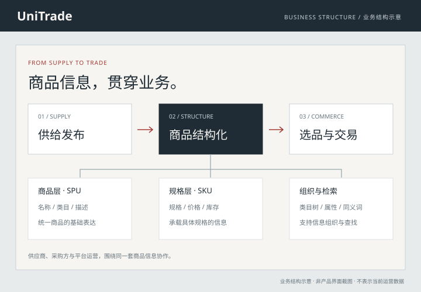

先定义商品，再设计接入方式
用字段规范明确商品应包含什么，并区分 SPU 商品层与 SKU 规格层。单个发布与批量接入围绕同一套定义展开，避免不同入口形成不同表达。
决策依据 / 接入方便与信息完整需要一起考虑；必填、选填及规格边界属于产品规则。
一段真实的跨境 B2B 创业经历。独立承担商家接入、商品数据治理、选品与交易流程，以及上线运维，将产品、业务和工程连接起来。
独立域名 · unitrade.shop
这段创业经历已告一段落。本页记录当时的产品决策与工程交付，产品站通过独立域名访问。

跨境 B2B 平台要连接供给与需求，也要让不同角色使用同一套商品信息。
先让供给有共同的表达，
再让选品、沟通与交易接得上。
供应商需要把商品与规格完整发布，采购方需要找到并理解这些信息，平台运营则需要维持供给质量。商品字段、类目、规格和状态如果各自表达，后续环节就需要反复转换。产品的起点，是把这几类任务放回同一条业务链路。
这份案例按原产品任务与历史交付梳理，未将工程实现直接等同于真实成交或经营效果。
以供给接入与商品信息为基础，为上层选品和交易建立共同语言。
用字段规范明确商品应包含什么，并区分 SPU 商品层与 SKU 规格层。单个发布与批量接入围绕同一套定义展开，避免不同入口形成不同表达。
决策依据 / 接入方便与信息完整需要一起考虑；必填、选填及规格边界属于产品规则。
类目回答商品属于哪里，属性补充商品有什么特征。分类体系、商品属性与中英类目同义词共同服务于商品组织和跨语言检索。
决策依据 / 先建立可复用的数据表达，再支撑选品和供需匹配，不只依靠商品标题描述。
商家可以下载 Excel 模板、查阅必填字段说明，并在上传后看到异步导入进度。完成后的成功与失败统计、失败详情，让异常有明确的定位依据，便于修正后继续处理。
决策依据 / 降低接入门槛，也给错误留下修正路径，避免上传之后只能等待或重新猜测。
UniTrade · AI Native B2B 跨境贸易
创业经历已告一段落。
作为独立创业者，我承担了产品、业务链路、数据架构与工程交付：从商家接入和供给治理，到商品数据底座、选品匹配、询盘与交易流转，再到平台上线运维。创业期间，平台在 unitrade.shop 上线运营。
设计供给接入与商品规范，提供 Excel、SPU、SKU 等批量上传路径。
明确字段、类目、属性与 SPU / SKU 粒度，完成旧商品迁移。
以类目与属性为共同语言，中英类目同义词支撑跨语言检索。
承担询盘发起、沟通跟进及交易流转的产品与业务链路设计。
完成 Java API 与前端工程交付，以及创业期间的部署上线和持续迭代。
完整系统源码与商业数据保持私有，本页展示产品思路与历史交付范围。
产品独立域名 · unitrade.shop ↗分别说明历史资料与原系统实现，不以技术规模代替经营结果。
建立统一的商品字段规范、分类与属性体系，明确 SPU 与 SKU 的边界，并将规范应用于历史商品迁移和后续业务流程。
原平台保留供应商、采购方与管理端的页面结构，覆盖商品发布、批量上传、商品管理、订单与退款，以及多语言和客服相关模块。
证据口径：本页仅展示产品职责、设计思路与工程实现范围，具体商品及运营数据不公开。
数据与业务资料：围绕商品字段定义、SPU / SKU 粒度、类目与属性体系、中英类目同义词及迁移流程，说明数据规范如何支撑业务协作。
原平台前端：React、TypeScript 与 Vite，按采购方、供应商和平台管理角色组织页面，留有商品、订单、退款、多语言及客服等业务结构。
原平台后端：Java / Spring Boot 分模块实现用户、商品、订单与基础业务，配有部署、迁移和运维相关工程文件。
完整私有源码、供应商资料、商业数据与部署配置不在作品集中公开。这里保留的是可对照的实现范围及历史交付说明。
供给发布、商品组织与交易流转，共同构成这段创业实践。